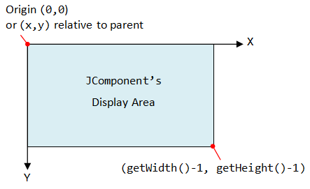
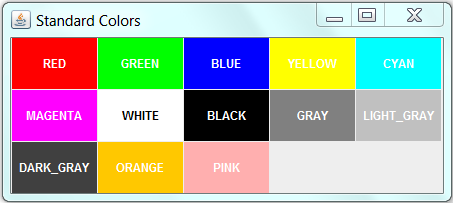
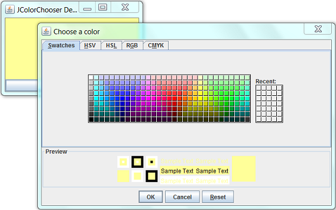
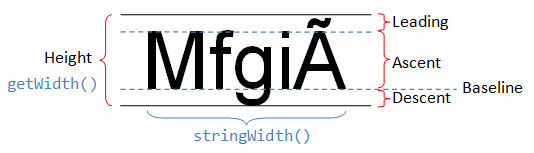
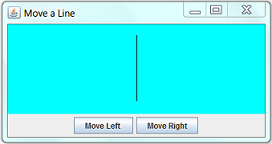
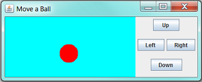
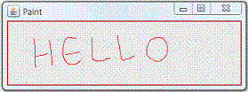
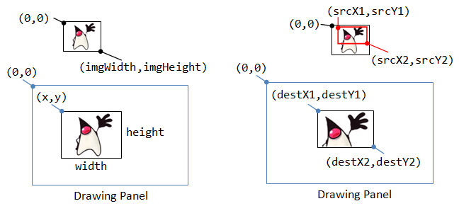
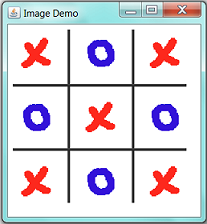
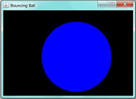

This chapter shows you how you can paint your own custom drawing (such as graphs, charts, drawings and, in particular, computer game avatars) because you cannot find standard GUI components that meets your requirements. I shall stress that you should try to reuse the standard GUI components as far as possible and leave custom graphics as the last resort. Nonetheless, custom graphics is crucial in game programming.
Read "Swing Tutorial" trail "Performing Custom Painting".
The java.awt.Graphics Class: Graphics Context and Custom Painting
A graphics context provides the capabilities of drawing on the screen. The graphics context maintains states such as the color and font used in drawing, as well as interacting with the underlying operating system to perform the drawing. In Java, custom painting is done via the java.awt.Graphics class, which manages a graphics context, and provides a set of device-independent methods for drawing texts, figures and images on the screen on different platforms.
The java.awt.Graphics is an abstract class, as the actual act of drawing is system-dependent and device-dependent. Each operating platform will provide a subclass of Graphics to perform the actual drawing under the platform, but conform to the specification defined in Graphics.
Graphics Class' Drawing Methods
The Graphics class provides methods for drawing three types of graphical objects:
- Text strings: via the
drawString()method. Take note thatSystem.out.println()prints to the system console, not to the graphics screen. - Vector-graphic primitives and shapes: via methods
drawXxx()andfillXxx(), whereXxxcould beLine,Rect,Oval,Arc,PolyLine,RoundRect, or3DRect. - Bitmap images: via the
drawImage()method.
// Drawing (or printing) texts on the graphics screen: drawString(String str, int xBaselineLeft, int yBaselineLeft); // Drawing lines: drawLine(int x1, int y1, int x2, int y2); drawPolyline(int[] xPoints, int[] yPoints, int numPoint); // Drawing primitive shapes: drawRect(int xTopLeft, int yTopLeft, int width, int height); drawOval(int xTopLeft, int yTopLeft, int width, int height); drawArc(int xTopLeft, int yTopLeft, int width, int height, int startAngle, int arcAngle); draw3DRect(int xTopLeft, int, yTopLeft, int width, int height, boolean raised); drawRoundRect(int xTopLeft, int yTopLeft, int width, int height, int arcWidth, int arcHeight) drawPolygon(int[] xPoints, int[] yPoints, int numPoint); // Filling primitive shapes: fillRect(int xTopLeft, int yTopLeft, int width, int height); fillOval(int xTopLeft, int yTopLeft, int width, int height); fillArc(int xTopLeft, int yTopLeft, int width, int height, int startAngle, int arcAngle); fill3DRect(int xTopLeft, int, yTopLeft, int width, int height, boolean raised); fillRoundRect(int xTopLeft, int yTopLeft, int width, int height, int arcWidth, int arcHeight) fillPolygon(int[] xPoints, int[] yPoints, int numPoint); // Drawing (or Displaying) images: drawImage(Image img, int xTopLeft, int yTopLeft, ImageObserver obs); // draw image with its size drawImage(Image img, int xTopLeft, int yTopLeft, int width, int height, ImageObserver o); // resize image on screen
These drawing methods is illustrated below. The drawXxx() methods draw the outlines; while fillXxx() methods fill the internal. Shapes with negative width and height will not be painted. The drawImage() will be discussed later.
Graphics Class' Methods for Maintaining the Graphics Context
The graphic context maintains states (or attributes) such as the current painting color, the current font for drawing text strings, and the current painting rectangular area (called clip). You can use the methods getColor(), setColor(), getFont(), setFont(), getClipBounds(), setClip() to get or set the color, font, and clip area. Any painting outside the clip area is ignored.
// Graphics context's current color. void setColor(Color c) Color getColor() // Graphics context's current font. void setFont(Font f) Font getFont() // Set/Get the current clip area. Clip area shall be rectangular and no rendering is performed outside the clip area. void setClip(int xTopLeft, int yTopLeft, int width, int height) void setClip(Shape rect) public abstract void clipRect(int x, int y, int width, int height) // intersects the current clip with the given rectangle Rectangle getClipBounds() // returns an Rectangle Shape getClip() // returns an object (typically Rectangle) implements Shape
Graphics Class' Other Methods
void clearRect(int x, int y, int width, int height) // Clear the rectangular area to background void copyArea(int x, int y, int width, int height, int dx, int dy) // Copy the rectangular area to offset (dx, dy). void translate(int x, int y) // Translate the origin of the graphics context to (x, y). Subsequent drawing uses the new origin. FontMetrics getFontMetrics() FontMetrics getFontMetrics(Font f) // Get the FontMetrics of the current font / the specified font
Graphics Coordinate System
In Java Windowing Subsystem (like most of the 2D Graphics systems), the origin (0,0) is located at the top-left corner.
EACH component/container has its own coordinate system, ranging for (0,0) to (width-1, height-1) as illustrated.
You can use method getWidth() and getHeight() to retrieve the width and height of a component/container. You can use getX() or getY() to get the top-left corner (x,y) of this component's origin relative to its parent.
Custom Painting Template
Under Swing, custom painting is usually performed by extending (i.e., subclassing) a JPanel as the drawing canvas and override the paintComponent(Graphics g) method to perform your own drawing with the drawing methods provided by the Graphics class. The Java Windowing Subsystem invokes (calls back) paintComponent(g) to render the JPanel by providing the current graphics context g, which can be used to invoke the drawing methods. The extended JPanel is often programmed as an inner class of a JFrame application to facilitate access of private variables/methods. Although we typically draw on the JPanel, you can in fact draw on any JComponent (such as JLabel, JButton).
The custom painting code template is as follows:
1 2 3 4 5 6 7 8 9 10 11 12 13 14 15 16 17 18 19 20 21 22 23 24 25 26 27 28 29 30 31 32 33 34 35 36 37 38 39 40 41 42 43 44 45 46 47 48 49 50 51 52 53 54 55 56 57 58 59 60 61 62 63 64 65 66 67 68 |
import java.awt.*; // Using AWT's Graphics and Color import java.awt.event.*; // Using AWT event classes and listener interfaces import javax.swing.*; // Using Swing's components and containers /** Custom Drawing Code Template */ // A Swing application extends javax.swing.JFrame public class CGTemplate extends JFrame { // Define constants public static final int CANVAS_WIDTH = 640; public static final int CANVAS_HEIGHT = 480; // Declare an instance of the drawing canvas, // which is an inner class called DrawCanvas extending javax.swing.JPanel. private DrawCanvas canvas; // Constructor to set up the GUI components and event handlers public CGTemplate() { canvas = new DrawCanvas(); // Construct the drawing canvas canvas.setPreferredSize(new Dimension(CANVAS_WIDTH, CANVAS_HEIGHT)); // Set the Drawing JPanel as the JFrame's content-pane Container cp = getContentPane(); cp.add(canvas); // or "setContentPane(canvas);" setDefaultCloseOperation(EXIT_ON_CLOSE); // Handle the CLOSE button pack(); // Either pack() the components; or setSize() setTitle("......"); // "super" JFrame sets the title setVisible(true); // "super" JFrame show } /** * Define inner class DrawCanvas, which is a JPanel used for custom drawing. */ private class DrawCanvas extends JPanel { // Override paintComponent to perform your own painting @Override public void paintComponent(Graphics g) { super.paintComponent(g); // paint parent's background setBackground(Color.BLACK); // set background color for this JPanel // Your custom painting codes. For example, // Drawing primitive shapes g.setColor(Color.YELLOW); // set the drawing color g.drawLine(30, 40, 100, 200); g.drawOval(150, 180, 10, 10); g.drawRect(200, 210, 20, 30); g.setColor(Color.RED); // change the drawing color g.fillOval(300, 310, 30, 50); g.fillRect(400, 350, 60, 50); // Printing texts g.setColor(Color.WHITE); g.setFont(new Font("Monospaced", Font.PLAIN, 12)); g.drawString("Testing custom drawing ...", 10, 20); } } // The entry main method public static void main(String[] args) { // Run the GUI codes on the Event-Dispatching thread for thread safety SwingUtilities.invokeLater(new Runnable() { @Override public void run() { new CGTemplate(); // Let the constructor do the job } }); } } |
Dissecting the Program
- Custom painting is performed by extending a
JPanel(calledDrawCanvas) and overrides thepaintComponent(Graphics g)method to do your own drawing with the drawing methods provided by theGraphicsclass. DrawCanvasis designed as an inner class of thisJFrameapplication, so as to facilitate access of the private variables/methods.- Java Windowing Subsystem invokes (calls back)
paintComponent(g)to render theJPanel, with the current graphics context ing, whenever there is a need to refresh the display (e.g., during the initial launch, restore, resize, etc). You can use the drawing methods (g.drawXxx()andg.fillXxx()) on the current graphics contextgto perform custom painting on theJPanel. - The size of the
JPanelis set via thesetPreferredSize(). TheJFramedoes not set its size, but packs the components contained viapack(). - In the
main(), the constructor is called in the event-dispatch thread via static methodjavax.swing.SwingUtilities.invokeLater()(instead of running in the main thread), to ensure thread-safety and avoid deadlock, as recommended by the Swing developers.
(Advanced) Anonymous Inner Class for Drawing Canvas
Instead of a named-inner class called DrawCanvas in the previous example, you can also use an anonymous inner class for the drawing canvas, if the painting code is short. For example,
// Create an anonymous inner class extends JPanel // Construct an instance called canvas JPanel canvas = new JPanel() { @Override public void paintComponent(Graphics g) { super.paintComponent(g); // paint parent's background
...... } }; ......
(Advanced) Getting the Graphics Context
You can retrieve the Graphics context of a JComponent via the getGraphics() method. This is, however, not commonly used. For example,
JPanel panel = new JPanel(); Graphics graphics = panel.getGraphics();
Custom Painting in AWT (Obsolete)
Under AWT, you can perform custom painting by extending java.awt.Canvas, and override the paint(Graphics g) method, in a java.awt.Frame application. Similarly, you can explicitly invoke repaint() to update the graphics.
Refreshing the Display via repaint()
At times, we need to explicitly refresh the display (e.g., in game and animation). We shall NOT invoke paintComponent(Graphics) directly. Instead, we invoke the JComponent's repaint() method. The Windowing Subsystem will in turn call back the paintComponent() with the current Graphics context and execute it in the event-dispatching thread for thread safety. You can repaint() a particular JComponent (such as a JPanel) or the entire JFrame. The children contained within the JComponent will also be repainted.
Colors and Fonts
java.awt.Color
The class java.awt.Color provides 13 standard colors as named-constants. They are: Color.RED, GREEN, BLUE, MAGENTA, CYAN, YELLOW, BLACK, WHITE, GRAY, DARK_GRAY, LIGHT_GRAY, ORANGE, and PINK. (In JDK 1.1, these constant names are in lowercase, e.g., red. This violates the Java naming convention for constants. In JDK 1.2, the uppercase names are added. The lowercase names were not removed for backward compatibility.)
You can use the toString() to print the RGB values of these color (e.g., System.out.println(Color.RED)):
RED : java.awt.Color[r=255, g=0, b=0] GREEN : java.awt.Color[r=0, g=255, b=0] BLUE : java.awt.Color[r=0, g=0, b=255] YELLOW : java.awt.Color[r=255, g=255, b=0] MAGENTA : java.awt.Color[r=255, g=0, b=255] CYAN : java.awt.Color[r=0, g=255, b=255] WHITE : java.awt.Color[r=255, g=255, b=255] BLACK : java.awt.Color[r=0, g=0, b=0] GRAY : java.awt.Color[r=128, g=128, b=128] LIGHT_GRAY: java.awt.Color[r=192, g=192, b=192] DARK_GRAY : java.awt.Color[r=64, g=64, b=64] PINK : java.awt.Color[r=255, g=175, b=175] ORANGE : java.awt.Color[r=255, g=200, b=0]
You can also use the RGB values or RGBA value (A for alpha to specify transparency/opaque) to construct your own color via constructors:
Color(int r, int g, int b); // between 0 and 255 Color(float r, float g, float b); // between 0.0f and 1.0f Color(int r, int g, int b, int alpha); // between 0 and 255 Color(float r, float g, float b, float alpha); // between 0.0f and 1.0f // alpha of 0 for totally transparent, 255 (or 1.0f) for totally opaque // The default alpha is 255 (or 1.0f) for totally opaque
For example:
Color myColor1 = new Color(123, 111, 222);
Color myColor2 = new Color(0.5f, 0.3f, 0.1f);
Color myColor3 = new Color(0.5f, 0.3f, 0.1f, 0.5f); // semi-transparent
To retrieve the individual components, you can use getRed(), getGreen(), getBlue(), getAlpha(), etc.
To set the background and foreground (text) color of a component/container, you can invoke:
JLabel label = new JLabel("Test");
label.setBackground(Color.LIGHT_GRAY);
label.setForeground(Color.RED);
To set the color of the Graphics context g (for drawing lines, shapes, and texts), use g.setColor(color):
g.setColor(Color.RED); g.drawLine(10, 20, 30, 40); // in Color.RED Color myColor = new Color(123, 111, 222); g.setColor(myColor); g.drawRect(10, 10, 40, 50); // in myColor
(Advanced) JColorChooser Example
This example uses the javax.swing.JColorChooser to set the background color of the JPanel.
1 2 3 4 5 6 7 8 9 10 11 12 13 14 15 16 17 18 19 20 21 22 23 24 25 26 27 28 29 30 31 32 33 34 35 36 37 38 39 40 41 42 43 44 45 46 47 48 49 50 |
import java.awt.*; // Using AWT's Graphics and Color import java.awt.event.*; // Using AWT's event classes and listener interfaces import javax.swing.*; // Using Swing's components and containers /** * An example of using ColorChooser to set the background */ @SuppressWarnings("serial") public class JColorChooserDemo extends JFrame { JPanel panel; Color bgColor = Color.LIGHT_GRAY; // Panel's background color // Constructor to setup the UI components and event handlers public JColorChooserDemo() { panel = new JPanel(new BorderLayout()); JButton btnColor = new JButton("Change Color"); panel.add(btnColor, BorderLayout.SOUTH); btnColor.addActionListener(new ActionListener() { @Override public void actionPerformed(ActionEvent evt) { Color color = JColorChooser.showDialog(JColorChooserDemo.this, "Choose a color", bgColor); if (color != null) { // new color selected bgColor = color; } panel.setBackground(bgColor); // change panel's background color } }); setContentPane(panel); setDefaultCloseOperation(JFrame.EXIT_ON_CLOSE); setTitle("JColorChooser Demo"); setSize(300, 200); setLocationRelativeTo(null); // center the application window setVisible(true); // show it } // The entry main() method public static void main(String[] args) { // Run GUI codes in the Event-Dispatching thread for thread safety SwingUtilities.invokeLater(new Runnable() { @Override public void run() { new JColorChooserDemo(); // Let the constructor do the job } }); } } |
java.awt.Font
The class java.awt.Font represents a specific font face, which can be used for rendering texts. You can use the following constructor to construct a Font instance:
public Font(String name, int style, int size);
// name: Family name "Dialog", "DialogInput", "Monospaced", "Serif", or "SansSerif" or
// Physical font found in this GraphicsEnvironment.
// You can also use String constants Font.DIALOG, Font.DIALOG_INPUT, Font.MONOSPACED,
// Font.SERIF, Font.SANS_SERIF (JDK 1.6)
// style: Font.PLAIN, Font.BOLD, Font.ITALIC or Font.BOLD|Font.ITALIC (Bit-OR)
// size: the point size of the font (in pt) (1 inch has 72 pt).
You can use the setFont() method to set the current font for the Graphics context g for rendering texts. For example,
Font myFont1 = new Font(Font.MONOSPACED, Font.PLAIN, 12); Font myFont2 = new Font(Font.SERIF, Font.BOLD | Font.ITALIC, 16); // bold and italics JButton btn = new JButton("RESET"); btn.setFont(myFont1); JLabel lbl = new JLabel("Hello"); lbl.setFont(myFont2); ...... g.drawString("In default Font", 10, 20); // in default font Font myFont3 = new Font(Font.SANS_SERIF, Font.ITALIC, 12); g.setFont(myFont3); g.drawString("Using the font set", 10, 50); // in myFont3
Font's Family Name vs. Font Name
A font could have many faces (or style), e.g., plain, bold or italic. All these faces have similar typographic design. The font face name, or font name for short, is the name of a particular font face, like "Arial", "Arial Bold", "Arial Italic", "Arial Bold Italic". The font family name is the name of the font family that determines the typographic design across several faces, like "Arial". For example,
java.awt.Font[family=Arial,name=Arial,style=plain,size=1] java.awt.Font[family=Arial,name=Arial Bold,style=plain,size=1] java.awt.Font[family=Arial,name=Arial Bold Italic,style=plain,size=1] java.awt.Font[family=Arial,name=Arial Italic,style=plain,size=1]
Logical Font vs. Physical Font
JDK supports these logical font family names: "Dialog", "DialogInput", "Monospaced", "Serif", or "SansSerif". JDK 1.6 provides these String constants: Font.DIALOG, Font.DIALOG_INPUT, Font.MONOSPACED, Font.SERIF, Font.SANS_SERIF.
Physical font names are actual font libraries such as "Arial", "Times New Roman" in the system.
GraphicsEnvironment's getAvailableFontFamilyNames() and getAllFonts()
You can use GraphicsEnvironment's getAvailableFontFamilyNames() to list all the font famiy names; and getAllFonts() to construct all Font instances (with font size of 1 pt). For example,
GraphicsEnvironment env = GraphicsEnvironment.getLocalGraphicsEnvironment();
// Get all font family name in a String[]
String[] fontNames = env.getAvailableFontFamilyNames();
for (String fontName : fontNames) {
System.out.println(fontName);
}
// Construct all Font instance (with font size of 1)
Font[] fonts = env.getAllFonts();
for (Font font : fonts) {
System.out.println(font);
}
Font's deriveFont()
You can use Font's deriveFont() to derive a new Font instance from this Font with varying size, style and others.
public Font deriveFont(float size) public Font deriveFont(int style) public Font deriveFont(AffineTransform trans) public Font deriveFont(int style, float size) public Font deriveFont(int style, AffineTransform trans)
For example,
Font font = new Font(Font.MONOSPACED, Font.BOLD, 12); System.out.println(font); // java.awt.Font[family=Monospaced,name=Monospaced,style=bold,size=12] Font fontDerived = font.deriveFont(20); System.out.println(fontDerived); // java.awt.Font[family=Monospaced,name=Monospaced,style=plain,size=12]
(Advanced) java.awt.FontMetrics
The java.awt.FontMetrics class can be used to measure the exact width and height of the string for a particular font face, so that you can position the string as you desire (such as at the center of the screen).
To create a FontMetrics, use getFontMetrics() methods of the Graphics class, as follows:
// In java.awt.Graphics public abstract FontMetrics getFontMetrics(Font f) // Get the FontMetrics of the specified font public abstract FontMetrics getFontMetrics() // Get the FontMetrics of the current font
// in java.awt.FontMetrics
public int getHeight()
public int getLeading()
public int getAscent()
public int getDescent()
The most commonly-used function for FontMetrics is to measure the width of a given String displayed in a certain font.
public int stringWidth(String str)
// Returns the total width for showing the specified String in this Font.
To centralize a string on the drawing canvas (e.g., JPanel):
public void paintComponent(Graphics g) {
super.paintComponent(g);
g.setFont(new Font("Arial", Font.BOLD, 30));
// Get font metrics for the current font
FontMetrics fm = g.getFontMetrics();
// Centralize the string
String msg = "Hello, world!";
int msgWidth = fm.stringWidth(msg);
int msgAscent = fm.getAscent();
// Get the position of the leftmost character in the baseline
// getWidth() and getHeight() returns the width and height of this component
int msgX = getWidth() / 2 - msgWidth / 2;
int msgY = getHeight() / 2 + msgAscent / 2;
g.drawString(msg, msgX, msgY);
}
Custom Graphics Examples
Example 1: Moving an Object via Key/Button Action
This example illustrates how to re-paint the screen in response to a KeyEvent or ActionEvent.
The display consists of two JPanel in a JFrame, arranged in BorderLayout. The top panel is used for custom painting; the bottom panel holds two JButton arranged in FlowLayout. Clicking the "Move Right" or "Move Left" buttons moves the line. The JFrame listens to the "Left-arrow" and "Right-arrow" keys, and responses by moving the line left or right.
1 2 3 4 5 6 7 8 9 10 11 12 13 14 15 16 17 18 19 20 21 22 23 24 25 26 27 28 29 30 31 32 33 34 35 36 37 38 39 40 41 42 43 44 45 46 47 48 49 50 51 52 53 54 55 56 57 58 59 60 61 62 63 64 65 66 67 68 69 70 71 72 73 74 75 76 77 78 79 80 81 82 83 84 85 86 87 88 89 90 91 92 93 94 95 96 97 98 99 100 101 102 103 104 105 106 107 |
import java.awt.*; // Using AWT's Graphics and Color import java.awt.event.*; // Using AWT's event classes and listener interface import javax.swing.*; // Using Swing's components and containers /** * Custom Graphics Example: Using key/button to move a line left or right. */ @SuppressWarnings("serial") public class CGMoveALine extends JFrame { // Define constants for the various dimensions public static final int CANVAS_WIDTH = 400; public static final int CANVAS_HEIGHT = 140; public static final Color LINE_COLOR = Color.BLACK; public static final Color CANVAS_BACKGROUND = Color.CYAN; // The moving line from (x1, y1) to (x2, y2), initially position at the center private int x1 = CANVAS_WIDTH / 2; private int y1 = CANVAS_HEIGHT / 8; private int x2 = x1; private int y2 = CANVAS_HEIGHT / 8 * 7; private DrawCanvas canvas; // The custom drawing canvas (an innder class extends JPanel) // Constructor to set up the GUI components and event handlers public CGMoveALine() { // Set up a panel for the buttons JPanel btnPanel = new JPanel(new FlowLayout()); JButton btnLeft = new JButton("Move Left "); btnPanel.add(btnLeft); btnLeft.addActionListener(new ActionListener() { public void actionPerformed(ActionEvent evt) { x1 -= 10; x2 -= 10; canvas.repaint(); requestFocus(); // change the focus to JFrame to receive KeyEvent } }); JButton btnRight = new JButton("Move Right"); btnPanel.add(btnRight); btnRight.addActionListener(new ActionListener() { public void actionPerformed(ActionEvent evt) { x1 += 10; x2 += 10; canvas.repaint(); requestFocus(); // change the focus to JFrame to receive KeyEvent } }); // Set up a custom drawing JPanel canvas = new DrawCanvas(); canvas.setPreferredSize(new Dimension(CANVAS_WIDTH, CANVAS_HEIGHT)); // Add both panels to this JFrame's content-pane Container cp = getContentPane(); cp.setLayout(new BorderLayout()); cp.add(canvas, BorderLayout.CENTER); cp.add(btnPanel, BorderLayout.SOUTH); // "super" JFrame fires KeyEvent addKeyListener(new KeyAdapter() { @Override public void keyPressed(KeyEvent evt) { switch(evt.getKeyCode()) { case KeyEvent.VK_LEFT: x1 -= 10; x2 -= 10; repaint(); break; case KeyEvent.VK_RIGHT: x1 += 10; x2 += 10; repaint(); break; } } }); setDefaultCloseOperation(JFrame.EXIT_ON_CLOSE); // Handle the CLOSE button setTitle("Move a Line"); pack(); // pack all the components in the JFrame setVisible(true); // show it requestFocus(); // set the focus to JFrame to receive KeyEvent } /** * Define inner class DrawCanvas, which is a JPanel used for custom drawing. */ class DrawCanvas extends JPanel { @Override public void paintComponent(Graphics g) { super.paintComponent(g); setBackground(CANVAS_BACKGROUND); g.setColor(LINE_COLOR); g.drawLine(x1, y1, x2, y2); // Draw the line } } // The entry main() method public static void main(String[] args) { // Run GUI codes on the Event-Dispatcher Thread for thread safety SwingUtilities.invokeLater(new Runnable() { @Override public void run() { new CGMoveALine(); // Let the constructor do the job } }); } } |
Dissecting the Program
- To do custom painting, you have to decide which superclass to use. It is recommended that you use a
JPanel(or a more specialized Swing component such asJButtonorJLabel). In this example, we extend theJPanelto do our custom painting, in an inner class, as follows:class DrawCanvas extends JPanel { @Override public void paintComponent(Graphics g) { super.paintComponent(g); // paint background setBackground(CANVAS_BACKGROUND); g.setColor(LINE_COLOR); g.drawLine(x1, y1, x2, y2); } } - The
paintComponent()method is overridden to provide the custom drawing codes. We use thedrawLine()method to draw a line from(x1,y1)to(x2, y2). - The
paintComponent()method cannot be called directly from your code, because it requires aGraphicsobject as argument. paintComponent()is a so-called "call-back" method. The Windowing subsystem invokes this method and provides a pre-configuredGraphicsobject to represent its state (e.g., current color, font, clip area and etc). There are two kinds of painting: system-triggered painting and application-triggered painting. In a system-trigger painting, the system request a component to render its content when the component is first made visible on the screen, or the component is resized, or the component is damaged that needs to be repaint. In an application-triggered painting, the application invokes arepaint()request. Under both cases, the Windowing subsystem will call-back thepaintComponent()to render the contents of the component with a properGraphicsobject as argument.- In this example, the application requests for a
repaint()in theKeyEventandMouseEventhandlers, which triggers thepaintComponent()with an appropriateGraphicsobject as the argument. - To be precise, when you invoke the
repaint()method to repaint aJComponent, the Windowing subsystem calls-backpaint()method. Thepaint()method then calls-back three methods:paintComponent(),paintBorder()andpaintChilden(). - In the overridden
paintComponent()method, we callsuper.paintComponent()to paint the background of theJComponent. If this call is omitted, you must either paint the background yourself (via afillRect()call) or usesetOpaque(false)to make theJComponenttransparent. This will inform Swing system to paint thoseJComponentsbehind the transparent component. - We choose the
JFrameas the source of theKeyEvent.JFrameshall be "in focus" when the key is pressed. TherequestFocus()method (of "this"JFrame) is invoked to request for the keyboard focus.
[TODO]: may need to revise.
Try
Modifying the program to move a ball in response to up/down/left/right buttons, as well as the 4 arrow and "wasd" keys , as shown:
Example 2: Moving Sprites
In game programming, we have moving game objects called sprites. Each sprite is usually modeled in its own class, with its own properties, and it can paint itself.
Sprite.java
This class models a sprite, with its own properties, and it can paint itself via the paint() method provided given a Graphics context. A rectangle is used here.
1 2 3 4 5 6 7 8 9 10 11 12 13 14 15 16 17 18 19 20 21 22 23 24 25 |
import java.awt.*; // Using AWT's Graphics and Color /** * The class Sprite models a moving game object, with its own operations * and can paint itself. */ public class Sprite { // Variables (package access) int x, y, width, height; // Use an rectangle for illustration Color color = Color.RED; // Color of the object // Constructor public Sprite(int x, int y, int width, int height, Color color) { this.x = x; this.y = y; this.width = width; this.height = height; this.color = color; } // Paint itself given the Graphics context public void paint(Graphics g) { g.setColor(color); g.fillRect(x, y, width, height); // Fill a rectangle } } |
MoveASprite.java
Instead of repainting the entire display, we only repaint the affected areas (clips), for efficiency, via the repaint(x, y, width, height) method. In moveLeft() and moveRight(), we save the states, move the object, repaint the saved clip-area with the background color, and repaint the new clip-area occupied by the sprite. Repainting is done by asking the sprite to paint itself at the new location, and erase from the old location.
1 2 3 4 5 6 7 8 9 10 11 12 13 14 15 16 17 18 19 20 21 22 23 24 25 26 27 28 29 30 31 32 33 34 35 36 37 38 39 40 41 42 43 44 45 46 47 48 49 50 51 52 53 54 55 56 57 58 59 60 61 62 63 64 65 66 67 68 69 70 71 72 73 74 75 76 77 78 79 80 81 82 83 84 85 86 87 88 89 90 91 92 93 94 95 96 97 98 99 100 101 102 103 104 105 106 107 108 109 110 111 112 113 114 115 |
import java.awt.*; // Using AWT's Graphics and Color import java.awt.event.*; // Using AWT's event classes and listener interfaces import javax.swing.*; // Using Swing's components and containers /** * Custom Graphics Example: Using key/button to move a object left or right. * The moving object (sprite) is defined in its own class, with its own * operations and can paint itself. */ public class CGMoveASprite extends JFrame { // Define constants for the various dimensions public static final int CANVAS_WIDTH = 400; public static final int CANVAS_HEIGHT = 140; public static final Color CANVAS_BG_COLOR = Color.CYAN; private DrawCanvas canvas; // the custom drawing canvas (an inner class extends JPanel) private Sprite sprite; // the moving object // Constructor to set up the GUI components and event handlers public CGMoveASprite() { // Construct a sprite given x, y, width, height, color sprite = new Sprite(CANVAS_WIDTH / 2 - 5, CANVAS_HEIGHT / 2 - 40, 10, 80, Color.RED); // Set up a panel for the buttons JPanel btnPanel = new JPanel(new FlowLayout()); JButton btnLeft = new JButton("Move Left "); btnPanel.add(btnLeft); btnLeft.addActionListener(new ActionListener() { @Override public void actionPerformed(ActionEvent evt) { moveLeft(); requestFocus(); // change the focus to JFrame to receive KeyEvent } }); JButton btnRight = new JButton("Move Right"); btnPanel.add(btnRight); btnRight.addActionListener(new ActionListener() { @Override public void actionPerformed(ActionEvent evt) { moveRight(); requestFocus(); // change the focus to JFrame to receive KeyEvent } }); // Set up the custom drawing canvas (JPanel) canvas = new DrawCanvas(); canvas.setPreferredSize(new Dimension(CANVAS_WIDTH, CANVAS_HEIGHT)); // Add both panels to this JFrame Container cp = getContentPane(); cp.setLayout(new BorderLayout()); cp.add(canvas, BorderLayout.CENTER); cp.add(btnPanel, BorderLayout.SOUTH); // "super" JFrame fires KeyEvent addKeyListener(new KeyAdapter() { @Override public void keyPressed(KeyEvent evt) { switch(evt.getKeyCode()) { case KeyEvent.VK_LEFT: moveLeft(); break; case KeyEvent.VK_RIGHT: moveRight(); break; } } }); setDefaultCloseOperation(JFrame.EXIT_ON_CLOSE); setTitle("Move a Sprite"); pack(); // pack all the components in the JFrame setVisible(true); // show it requestFocus(); // "super" JFrame requests focus to receive KeyEvent } // Helper method to move the sprite left private void moveLeft() { // Save the current dimensions for repaint to erase the sprite int savedX = sprite.x; // update sprite sprite.x -= 10; // Repaint only the affected areas, not the entire JFrame, for efficiency canvas.repaint(savedX, sprite.y, sprite.width, sprite.height); // Clear old area to background canvas.repaint(sprite.x, sprite.y, sprite.width, sprite.height); // Paint new location } // Helper method to move the sprite right private void moveRight() { // Save the current dimensions for repaint to erase the sprite int savedX = sprite.x; // update sprite sprite.x += 10; // Repaint only the affected areas, not the entire JFrame, for efficiency canvas.repaint(savedX, sprite.y, sprite.width, sprite.height); // Clear old area to background canvas.repaint(sprite.x, sprite.y, sprite.width, sprite.height); // Paint at new location } // Define inner class DrawCanvas, which is a JPanel used for custom drawing class DrawCanvas extends JPanel { @Override public void paintComponent(Graphics g) { super.paintComponent(g); setBackground(CANVAS_BG_COLOR); sprite.paint(g); // the sprite paints itself } } // The entry main() method public static void main(String[] args) { // Run GUI construction on the Event-Dispatching Thread for thread safety SwingUtilities.invokeLater(new Runnable() { @Override public void run() { new CGMoveASprite(); // Let the constructor do the job } }); } } |
Example 3: Paint
MyPaint.java
1 2 3 4 5 6 7 8 9 10 11 12 13 14 15 16 17 18 19 20 21 22 23 24 25 26 27 28 29 30 31 32 33 34 35 36 37 38 39 40 41 42 43 44 45 46 47 48 49 50 51 52 53 54 55 56 57 58 59 60 61 62 63 64 65 66 67 68 69 70 |
import java.util.List; import java.util.ArrayList; import java.awt.*; // Using AWT's Graphics and Color import java.awt.event.*; // Using AWT's event classes and listener interfaces import javax.swing.*; // Using Swing's components and container /** * Custom Graphics Example: Paint (similar to Windows' paint program) */ public class MyPaint extends JFrame { // Define constants for the various dimensions public static final int CANVAS_WIDTH = 500; public static final int CANVAS_HEIGHT = 300; public static final Color LINE_COLOR = Color.RED; // Lines drawn, consists of a List of PolyLine instances private List<PolyLine> lines = new ArrayList<PolyLine>(); private PolyLine currentLine; // the current line (for capturing) // Constructor to set up the GUI components and event handlers public MyPaint() { DrawCanvas canvas = new DrawCanvas(); canvas.setPreferredSize(new Dimension(CANVAS_WIDTH, CANVAS_HEIGHT)); canvas.addMouseListener(new MouseAdapter() { @Override public void mousePressed(MouseEvent evt) { // Begin a new line currentLine = new PolyLine(); lines.add(currentLine); currentLine.addPoint(evt.getX(), evt.getY()); } }); canvas.addMouseMotionListener(new MouseMotionAdapter() { @Override public void mouseDragged(MouseEvent evt) { currentLine.addPoint(evt.getX(), evt.getY()); repaint(); // invoke paintComponent() } }); setContentPane(canvas); setDefaultCloseOperation(JFrame.EXIT_ON_CLOSE); setTitle("Paint"); pack(); setVisible(true); } // Define inner class DrawCanvas, which is a JPanel used for custom drawing private class DrawCanvas extends JPanel { @Override protected void paintComponent(Graphics g) { // called back via repaint() super.paintComponent(g); g.setColor(LINE_COLOR); for (PolyLine line: lines) { line.draw(g); } } } // The entry main method public static void main(String[] args) { SwingUtilities.invokeLater(new Runnable() { // Run the GUI codes on the Event-Dispatching thread for thread safety @Override public void run() { new MyPaint(); // Let the constructor do the job } }); } } |
PolyLine.java
1 2 3 4 5 6 7 8 9 10 11 12 13 14 15 16 17 18 19 20 21 22 23 24 25 26 27 28 29 |
import java.awt.Graphics; import java.util.*; /* * The PolyLine class model a line made up of many points */ public class PolyLine { private List<Integer> xList; // List of x-coord private List<Integer> yList; // List of y-coord // Constructor public PolyLine() { xList = new ArrayList<Integer>(); yList = new ArrayList<Integer>(); } // Add a point to this PolyLine public void addPoint(int x, int y) { xList.add(x); yList.add(y); } // This PolyLine paints itself given the Graphics context public void draw(Graphics g) { // draw itself for (int i = 0; i < xList.size() - 1; ++i) { g.drawLine((int)xList.get(i), (int)yList.get(i), (int)xList.get(i + 1), (int)yList.get(i + 1)); } } } |
Dissecting the Program
[TODO]
Drawing Images
javax.swing.ImageIcon
The javax.swing.ImageIcon class represents an icon, which is a fixed-size picture, typically small-size and used to decorate components. To create an ImageIcon:
// Prepare an ImageIcons to be used with JComponents or drawImage()
String imgNoughtFilename = "images/nought.gif";
ImageIcon iconNought = null;
URL imgURL = getClass().getClassLoader().getResource(imgNoughtFilename);
if (imgURL != null) {
iconNought = new ImageIcon(imgURL);
} else {
System.err.println("Couldn't find file: " + imgNoughtFilename);
}
Graphics Class' drawImage()
ImageIcon is fixed-in-sized and cannot be resized in display. You can use Graphics's drawImage() to resize a source image in display.
The java.awt.Graphics class declares 6 overloaded versions of abstract method drawImage().
public abstract boolean drawImage(Image img, int x, int y, ImageObserver observer) public abstract boolean drawImage(Image img, int x, int y, int width, int height, ImageObserver observer) public abstract boolean drawImage(Image img, int x, int y, Color bgcolor, ImageObserver observer) public abstract boolean drawImage(Image img, int x, int y, int width, int height, Color bgcolor, ImageObserver observer) // The img is drawn with its top-left corner at (x, y) scaled to the specified width and height // (default to the image's width and height). // The bgColor (background color) is used for "transparent" pixels. public abstract boolean drawImage(Image img, int destX1, int destY1, int destX2, int destY2, int srcX1, int srcY1, int srcX2, int srcY2, ImageObserver observer) public abstract boolean drawImage(Image img, int destX1, int destY1, int destX2, int destY2, int srcX1, int srcY1, int srcX2, int srcY2, Color bgcolor, ImageObserver observer) // The img "clip" bounded by (scrX1, scrY2) and (scrX2, srcY2) is scaled and drawn from // (destX1, destY1) to (destX2, destY2) on the display.
The coordinates involved is shown in the above diagram. The ImageObserver receives notification about the Image as it is loaded. In most purposes, you can set it to null or this.
The drawImage() method requires an Image instance, which can be obtained via ImageIcon's getImage() method; or via static method ImageIO.read() (read "Reading Images into your program"). For example,
// Prepare an ImageIcon ImageIcon icon = null; String imgFilename = "images/duke.gif"; java.net.URL imgURL = getClass().getClassLoader().getResource(imgFilename); if (imgURL != null) { icon = new ImageIcon(imgURL); } else { System.err.println("Couldn't find file: " + imgFilename); } // Prepare an Image object to be used by drawImage() final Image img = icon.getImage(); // Extend a JLabel and override paintComponet() to drawImage() JLabel lbl4 = new JLabel() { @Override public void paintComponent(Graphics g) { super.paintComponent(g); // paint background g.drawImage(img, 0, 0, 200, 200, null); } }; lbl4.setPreferredSize(new Dimension(200, 200)); cp.add(lbl4);
Example
Images:

1 2 3 4 5 6 7 8 9 10 11 12 13 14 15 16 17 18 19 20 21 22 23 24 25 26 27 28 29 30 31 32 33 34 35 36 37 38 39 40 41 42 43 44 45 46 47 48 49 50 51 52 53 54 55 56 57 58 59 60 61 62 63 64 65 66 67 68 69 70 71 72 73 74 75 76 77 78 79 80 81 82 83 84 85 86 87 88 89 90 |
import java.awt.*; // Using AWT's Graphics and Color import java.net.URL; import javax.swing.*; // Using Swing's components and container import java.util.Random; /** Test drawImage() thru ImageIcon */ @SuppressWarnings("serial") public class CGDrawImageDemo extends JFrame { // Define constants for the various dimensions public static final int ROWS = 3; public static final int COLS = 3; public static final int IMAGE_SIZE = 50; public static final int PADDING = 20; // padding from the border public static final int CELL_SIZE = IMAGE_SIZE + 2 * PADDING; public static final int CANVAS_SIZE = CELL_SIZE * ROWS; private DrawCanvas canvas; // The drawing canvas (an inner class extends JPanel) private Random random = new Random(); // for picking images in random // Images private String imgCrossFilename = "images/cross.gif"; private String imgNoughtFilename = "images/nought.gif"; private Image imgCross; // drawImage() uses an Image object private Image imgNought; // Constructor to set up the GUI components and event handlers public CGDrawImageDemo() { // Prepare the ImageIcon and Image objects for drawImage() ImageIcon iconCross = null; ImageIcon iconNought = null; URL imgURL = getClass().getClassLoader().getResource(imgCrossFilename); if (imgURL != null) { iconCross = new ImageIcon(imgURL); } else { System.err.println("Couldn't find file: " + imgCrossFilename); } imgCross = iconCross.getImage(); imgURL = getClass().getClassLoader().getResource(imgNoughtFilename); if (imgURL != null) { iconNought = new ImageIcon(imgURL); } else { System.err.println("Couldn't find file: " + imgNoughtFilename); } imgNought = iconNought.getImage(); canvas = new DrawCanvas(); canvas.setPreferredSize(new Dimension(CANVAS_SIZE, CANVAS_SIZE)); setContentPane(canvas); // use JPanel as content-pane setDefaultCloseOperation(EXIT_ON_CLOSE); pack(); // pack the components of "super" JFrame setTitle("Test drawImage()"); setVisible(true); } // Define inner class DrawCanvas, which is a JPanel used for custom drawing private class DrawCanvas extends JPanel { @Override public void paintComponent(Graphics g) { super.paintComponent(g); setBackground(Color.WHITE); // Set background color for this JPanel // Drawing Images (picked in random) for (int row = 0; row < ROWS; ++row) { for (int col = 0; col < COLS; ++col) { boolean useCross = random.nextBoolean(); Image img = useCross ? imgCross : imgNought; g.drawImage(img, CELL_SIZE * col + PADDING, CELL_SIZE * row + PADDING, IMAGE_SIZE, IMAGE_SIZE, null); } } // Draw Borders g.fill3DRect(CELL_SIZE - 2, 0, 4, CELL_SIZE * 3, true); g.fill3DRect(CELL_SIZE * 2 - 2, 0, 4, CELL_SIZE * 3, true); g.fill3DRect(0, CELL_SIZE - 2, CELL_SIZE * 3, 4, true); g.fill3DRect(0, CELL_SIZE * 2 - 2, CELL_SIZE * 3, 4, true); } } // The entry main method public static void main(String[] args) { // Run the GUI codes on the Event-Dispatching thread for thread-safety SwingUtilities.invokeLater(new Runnable() { @Override public void run() { new CGDrawImageDemo(); // Let the constructor do the job } }); } } |
This example places absolute numbers in the draw methods, which is hard to maintain and reuse. You should define name-constants such as CELL_WIDTH, BORDER_WIDTH, etc, and compute the numbers based on these constants.
Animation
Animation using javax.swing.Timer
Creating an animation (such as a bouncing ball) requires repeatedly running an updating task at a regular interval. Swing provides a javax.swing.Timer class which can be used to fire ActionEvent to its registered ActionListeners at regular interval.
The Timer class has one constructor:
public Timer(int delay, ActionListener listener)
You are required to override the actionPerformed() method of the ActionListener to specify your task's behavior. The Timer fires an ActionEvent to the ActionListener after the (initial) delay, and then at regular interval after delay.
You can start and stop the Timer via the Timer's start() and stop() methods. For example,
int delay = 500; // milliseconds // Create an instance of an anonymous subclass of ActionListener ActionListener updateTask = new ActionListener() { @Override public void actionPerformed(ActionEvent evt) { // ...... } }; // Start and run the task at regular delay new Timer(delay, updateTask).start();
You can use method setRepeats(false) to set the Timer to fire only once, after the delay. You can set the initial delay via setInitialDelay() and regular delay via setDelay().
A Timer can fire the ActionEvent to more than one ActionListeners. You can register more ActionListeners via the addActionListener() method.
The actionPerformed() runs on the event-dispatching thread, just like all the event handlers. You can be relieved of the multi-threading issues.
JDK 1.3 introduced another timer class called java.util.Timer, which is more general, but javax.swing.Timer is sufficient (and easier) to run animation in Swing application.
Example: A Bouncing Ball
1 2 3 4 5 6 7 8 9 10 11 12 13 14 15 16 17 18 19 20 21 22 23 24 25 26 27 28 29 30 31 32 33 34 35 36 37 38 39 40 41 42 43 44 45 46 47 48 49 50 51 52 53 54 55 56 57 58 59 60 61 62 63 64 65 66 67 68 69 70 71 72 73 74 75 76 77 |
import java.awt.*; // Using AWT's Graphics and Color import java.awt.event.*; // Using AWT's event classes and listener interfaces import javax.swing.*; // Using Swing's components and container /** * A Bouncing Ball: Running animation via Swing Timer */ @SuppressWarnings("serial") public class CGBouncingBallSwingTimer extends JFrame { // Define named-constants private static final int CANVAS_WIDTH = 640; private static final int CANVAS_HEIGHT = 480; private static final int UPDATE_PERIOD = 50; // milliseconds private DrawCanvas canvas; // the drawing canvas (an inner class extends JPanel) // Attributes of moving object private int x = 100, y = 100; // top-left (x, y) private int size = 250; // width and height private int xSpeed = 3, ySpeed = 5; // displacement per step in x, y // Constructor to setup the GUI components and event handlers public CGBouncingBallSwingTimer() { canvas = new DrawCanvas(); canvas.setPreferredSize(new Dimension(CANVAS_WIDTH, CANVAS_HEIGHT)); this.setContentPane(canvas); this.setDefaultCloseOperation(EXIT_ON_CLOSE); this.pack(); this.setTitle("Bouncing Ball"); this.setVisible(true); // Define an ActionListener to perform update at regular interval ActionListener updateTask = new ActionListener() { @Override public void actionPerformed(ActionEvent evt) { update(); // update the (x, y) position repaint(); // Refresh the JFrame, callback paintComponent() } }; // Allocate a Timer to run updateTask's actionPerformed() after every delay msec new Timer(UPDATE_PERIOD, updateTask).start(); } // Update the (x, y) position of the moving object public void update() { x += xSpeed; y += ySpeed; if (x > CANVAS_WIDTH - size || x < 0) { xSpeed = -xSpeed; } if (y > CANVAS_HEIGHT - size || y < 0) { ySpeed = -ySpeed; } } // Define inner class DrawCanvas, which is a JPanel used for custom drawing private class DrawCanvas extends JPanel { @Override public void paintComponent(Graphics g) { super.paintComponent(g); // paint parent's background setBackground(Color.BLACK); g.setColor(Color.BLUE); g.fillOval(x, y, size, size); // draw a circle } } // The entry main method public static void main(String[] args) { // Run GUI codes in Event-Dispatching thread for thread safety SwingUtilities.invokeLater(new Runnable() { @Override public void run() { new CGBouncingBallSwingTimer(); // Let the constructor do the job } }); } } |
javax.swing.Timer does not provide very accurate timing due to the overhead of event-handling. It probaly cannot be used for real-time application such as displaying a clock.
[TODO] Stop the Timer after x steps
(Advanced) Animation using a new Thread
Animation usually involves multi-threading, so that the GUI refreshing operations does not interfere with the programming logic. Multi-threading is an advanced topics. Read "Multithreading & Concurrent Programming"
In the previous example, we use javax.swing.Timer, which run the updating task at regular interval on the event-dispatching thread. In this example, we shall create a new thread to run the update.
To create a new thread, define a (anonymous and inner) subclass of Thread and override the run() method to specify the behavior of the task. Create an instance and start the instance via the start() method, which calls back the run() defined earlier.
To ensure the new thread does not starve the other threads, in particular the event-dispatching thread, the thread shall yield control via the sleep(mills) method, which also provides the necessary delay.
1 2 3 4 5 6 7 8 9 10 11 12 13 14 15 16 17 18 19 20 21 22 23 24 25 26 27 28 29 30 31 32 33 34 35 36 37 38 39 40 41 42 43 44 45 46 47 48 49 50 51 52 53 54 55 56 57 58 59 60 61 62 63 64 65 66 67 68 69 70 71 72 73 74 75 76 77 78 79 80 81 82 |
import java.awt.*; // Using AWT's Graphics and Color import javax.swing.*; // Using Swing's components and containers /** * A Bouncing Ball: Running animation via a custom thread */ public class CGBouncingBall extends JFrame { // Define named-constants private static final int CANVAS_WIDTH = 640; private static final int CANVAS_HEIGHT = 480; private static final int UPDATE_INTERVAL = 50; // milliseconds private DrawCanvas canvas; // the drawing canvas (an inner class extends JPanel) // Attributes of moving object private int x = 100; // top-left (x, y) private int y = 100; private int size = 250; // width and height private int xSpeed = 3; // moving speed in x and y directions private int ySpeed = 5; // displacement per step in x and y // Constructor to setup the GUI components and event handlers public CGBouncingBall() { canvas = new DrawCanvas(); canvas.setPreferredSize(new Dimension(CANVAS_WIDTH, CANVAS_HEIGHT)); this.setContentPane(canvas); this.setDefaultCloseOperation(EXIT_ON_CLOSE); this.pack(); this.setTitle("Bouncing Ball"); this.setVisible(true); // Create a new thread to run update at regular interval Thread updateThread = new Thread() { @Override public void run() { while (true) { update(); // update the (x, y) position repaint(); // Refresh the JFrame. Called back paintComponent() try { // Delay and give other thread a chance to run Thread.sleep(UPDATE_INTERVAL); // milliseconds } catch (InterruptedException ignore) {} } } }; updateThread.start(); // called back run() } // Update the (x, y) position of the moving object public void update() { x += xSpeed; y += ySpeed; if (x > CANVAS_WIDTH - size || x < 0) { xSpeed = -xSpeed; } if (y > CANVAS_HEIGHT - size || y < 0) { ySpeed = -ySpeed; } } // Define Inner class DrawCanvas, which is a JPanel used for custom drawing class DrawCanvas extends JPanel { @Override public void paintComponent(Graphics g) { super.paintComponent(g); // paint parent's background setBackground(Color.BLACK); g.setColor(Color.BLUE); g.fillOval(x, y, size, size); // draw a circle } } // The entry main method public static void main(String[] args) { // Run GUI codes in Event-Dispatching thread for thread safety SwingUtilities.invokeLater(new Runnable() { @Override public void run() { new CGBouncingBall(); // Let the constructor do the job } }); } } |
- To update the display regularly, we explicitly invoke the
repaint()method of theJFrame, which will callback thepaintComponent(g)of all the components contained in thisJFrame. - The display refreshing code is run in its own thread, so as to avoid the infamous unresponsive user interface problem. It is programmed as an anonymous inner class, extends class
Thread, by overriding therun()method to provide the programmed operations (i.e.,repaint()). Thestart()method is use to start the thread, which will callback therun(). - Inside the overridden
run(), therepaint()is programmed inside an infinite loop, followed by aThread.sleep(milliseconds)method, which suspends the thread for the given milliseconds. This operation provides the necessary delay and also yield control to other thread to perform their intended operations.
[TODO] Stopping the thread after x steps
(Advanced) A Closer Look at repaint()
Reference: "Painting in AWT and Swing" @ http://www.oracle.com/technetwork/java/painting-140037.html. I summarize some of the important points here.
Heavyweight AWT Components vs. Lightweight Swing Components
The original AWT components are heavyweight components. "Heavyweight" means that the component has it's own opaque native window. Heavyweight components, such as java.awt.Button, are mapped to the platform-specific components. It relies on the windowing subsystem in each native platform to take care of details such as damage detection, clip calculation, and z-ordering. On the other hand, the newer Swing JComponents (such as javax.swing.JButton) are lightweight components. A "lightweight" component does not own its screen resources but reuses the native window of its closest heavyweight ancestor. Swing JComponents do not rely on the native platform and are written purely in Java, . The top-level containers, such as JFrame, JApplet and JDialog, which are not subclass of JComponent, remain heavyweight. It is because the lightweight Swing JComponents need to attach to a heavyweight ancestor.
Painting Mechanism
Painting is carried out via a "call-back" mechanism. A program shall put its painting codes in a overridden method (paint() for AWT components or paintComponent() for Swing component), and the windowing subsystem will call back this method when it's time to paint.
System-triggered vs. Application-triggered Painting Requests
There are two types of paint (or repaint) requests:
- System-triggered: e.g., the component is first made visible, the componet is resized, etc. The windowing subsystem will schedule
paint()orpaintComponent()on the event-dispatching thread. - Application-triggered: application has modified the appearance of the component and requested to repaint the component. However, Application shall not invoke
paint()orpaintComponent()directly. Instead, it shall invoke a special method calledrepaint(), which will in turn invokepaint()orpaintComponent(). Multiplerepaint()requests may be collapsed into a singlepaint()call.
Instead of issuing repaint() to paint the entire component, for efficiency, you can selectively repaint a rectangular clip area. You can also specify a maximum time limit for painting to take place.
public void repaint()
// requests to repaint this component
public void repaint(long timeMax)
// repaint before timeMax msec (for lightweight components)
public void repaint(int x, int y, int width, int height)
// repaint the specified rectangular area
public void repaint(long timeMax, int x, int y, int width, int height)
// repaint the specified rectangular area within timeMax msec
Painting the Lightweight Swing Components
A lightweight needs a heavyweight somewhere up the containment hierarchy in order to have a place to paint, as only heavyweight components have their own opaque window. When this heavyweight ancestor is asked to paint its window, it must also paint all of its lightweight descendants. This is handled by java.awt.Container's paint() method, which calls paint() on any of its visible, lightweight children which intersect with the rectangle to be painted. Hence, it is crucial for all Container subclasses (lightweight or heavyweight) that override paint() to place a super.paint() call in the paint() method. This super.paint() call invoke Container's (super) paint() method, which in turn invoke paint() on all its descendants. If the super.paint() call is missing, some of the lightweight descendants will be shown up.
Opaque and Transparent
Lightweight components does not own its opaque window and "borrow" the screen real estate of its heavyweight ancestor. As a result, they could be made transparent, by leaving their background pixels unpainted to allow the underlying component to show through.
To improve performance of opaque components, Swing adds a property called opaque to all JComponents. If opaque is set to true, the component agrees to paint all of the pixels contained within its rectangular bounds. In order words, the windowing subsystem does not have to do anything within these bounds such as painting its ancestors. It opaque is set to false, the component makes no guarantees about painting all the bits within its rectangular bounds, and the windowing subsystem has more work to do.
Swing further factor the paint() method into three methods, which are invoked in the following order:
protected void paintComponent(Graphics g) protected void paintBorder(Graphics g) protected void paintChildren(Graphics g)
Swing programs should override paintComponent() instead of paint().
Most of the standard Swing components (in particular, JPanel) have their look and feel implemented by separate look-and-feel objects (called "UI delegates") for Swing's Pluggable look and feel feature. This means that most or all of the painting for the standard components is delegated to the UI delegate and this occurs in the following way:
paint()invokespaintComponent().- If the
uiproperty is non-null,paintComponent()invokesui.update(). - If the component's
opaqueproperty istrue,ui.udpate()fills the component's background with the background color and invokesui.paint(). ui.paint()renders the content of the component.
This means that subclasses of Swing components which have a UI delegate (such as JPanel), should invoke super.paintComponent() within their overridden paintComponent(), so that ui.update() fills the background (of the superclass such as JPanel) provided opaque is true.
public class MyPanel extends JPanel {
@Override
protected void paintComponent(Graphics g) {
// Let UI delegate paint first
// (including background filling, if I'm opaque)
super.paintComponent(g); // fill the JPanel's background and invoke ui.paint()
// paint my contents next....
}
}
Try removing the super.paintComponent() from a Swing program that does animation (e.g., bouncing ball). The background will not be painted, and the previous screen may not be cleared. You can also paint the background yourself by filling a Rectangle with background color.
@Override
protected void paintComponent(Graphics g) {
g.setColor(backgroundColor);
g.fillRect(0, 0, getWidth() - 1, getHeight() - 1);
}
Furthermore, if you set the opaque to false (via setOpaque(false)) for the subclass of JPanel, the super.paintComponent(g) does not fill the background.
REFERENCES & RESOURCES
- "The Swing Tutorial" @ http://docs.oracle.com/javase/tutorial/uiswing/, in particular, the section on "Performing Custom Graphics".
- "Painting in AWT and Swing" @ http://www.oracle.com/technetwork/java/painting-140037.html.